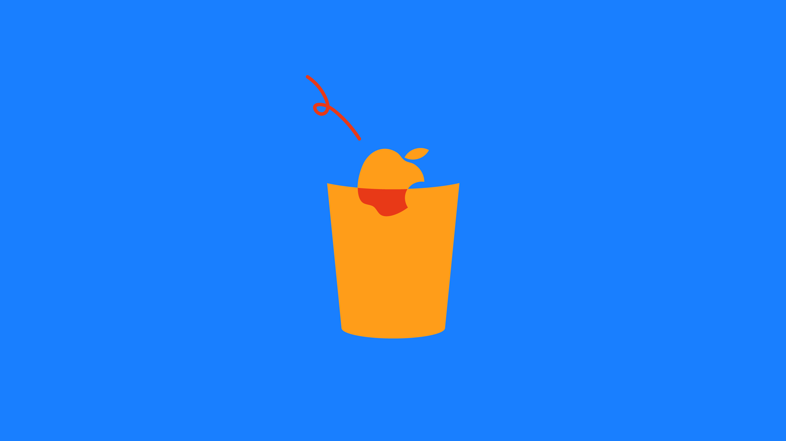

1
慣れたものと一時だけお別れをする
私は今回、ネットから離れ、ネットを繋いでいなくてもできることをいくつか実行してみた。SNS(ソーシャル・ネットワーキング・サービス)で最も多くの人が集まり、興味のある多くの情報が飛び交う時間帯である20〜21時に決め、短い時間ではあるが読書・テレビ視聴・アルバイト・ライブ鑑賞・課題など様々なことに挑み、『敢えてのオフライン』を体験した。

また、挑戦するにあたって電源を切ってみたり、スマホを視界に入らないところに置いたり、スマホがない現在の生活を考えてみた。自分がいかにスマホやパソコンを捨てオフラインと向き合うことができ、かつそこからどんな考えを出していくか、何を感じたかが大切となってくる。
2
紙媒体と向き合ってみる
まず1日目は読書をしてみた。読書といっても、溜まっていた漫画を読んだだけではあるが、前から読みたかったものだったため集中することができ、気が散らずスマホを触りたいという気持ちが湧くことは全くなかった。

紙媒体は1996,7年をピークに売り上げが下がり続けている。人々の目が紙から液晶画面へと移っていくのは、電子書籍の方が即時性に優れており、どこにいても端末一つで閲覧できたり指一本で簡単にページをめくれることも影響しているであろう。電子書籍はオフラインであっても読むことはできるが、ダウンロードが必要になるので一度はオンラインにしなければならない。オンラインを避ける手段、とまではいかないが、紙媒体の方が余計な手間を省くことができながらネットに繋ぐことなく五感を使い本そのものを楽しむことができる。
3
どちらを見るべき？
2〜4日目はテレビを視聴した。我が家には時計が無いので、時間を確認する以外にスマホ画面は通知の内容であっても見ないように心がけた。また、視界に入らないようにしたり手の届く位置に置かないようにした。バラエティ番組を見ていたので、世の中に出回っている情報やニュースは一切入ってこなかった。

テレビという機械は『イ』から音楽番組まで広範囲に情報を同時に発信できる優れものだ。しかし、ネットというそれ以上の優れものに負けつつあるのが現状である。テレビが情報収集の主だった時代は、決まった時間帯でしかニュースを見ることができず、放送する時間を待ちすぐに情報を得ることができなかった。新聞も時間が経った情報しか載っておらず、新鮮度は下がっていた。
時代は進みネットが普及するとどんなニュースであってもいち早く拡散された。地震速報はテレビよりも早い。前述した電子書籍と同じように、ネットニュースは情報公開の早さといつでも自分が好きな時に見れるところがテレビに勝っているのだ。しかし、そんなネットニュースにもデメリットはある。
オフラインだと情報遮断され何も見れなくなることもそうであるが、テレビと違いネットを使う不特定多数の人が一気に膨大な量を流すため混乱してしまう。真実か虚偽かどうか自分で判断することはテレビもネットニュースも必要であるが、テレビの方が無駄な情報を与えられることなく知りたいことだけを報道するので、そういう方面では良いものだと言える。
以前見たバラエティ番組で、「情報原人」と称し一週間情報メディアを何も受け付けず家に閉じこもって生活するという企画があった。それを経験していた人は、もちろん世の中で何が起こっているか全く把握できていなかったが、ひとつ驚いたことがあった。それは隣人の声が情報源だったことだ。当時はサッカーのW杯が開催されており、それを観戦して熱狂した隣に住む人が大声を上げたことで情報原人の耳に届いていたのだ。このように、情報メディアは見るだけではなく聞くことにおいても役割が果たされていると考えられる。
4
オフラインで分かることもある
10日間の限られた時間帯だけではあるが、Wi-fiを繋いで見たりできたりすること全てを遮断する生活を体験してみた。この普段からしたらあり得ない空間で、考えたことや逆にオンラインが必要だと感じる瞬間があった。

体験して考えたのは、SNSがあまりにも現代の生活に浸透していることだ。例えばSNSは不特定多数の人が集まり、共通の趣味や嗜好の人を見つけやすい。そこから仲が深まり、友達として現実世界でも出会ったり最終的には結婚までするパターンもある。また、動画配信サイトも含めたコンテンツを使い自分の意見を発信すれば、すぐに第三者から反応が来て拡散されたり炎上したりなどする。自分自身が積極的に行動すれば、何でもできるのである。この利便性こそが浸透している理由の一つでもあるし、『出会いの場所』とも言えなくはないだろう。
ではこのように便利なオンラインはどういう時に必要になっただろうか。オフライン生活の中で考えたのは、特に目的地に辿り着けなくて地図を見たい時と晩御飯のメニューが思いつかなくて調べようと思った時だった。私は休日に自転車で30km先の目的地まで行こうとした時、道が全く分からずマップアプリを何度も見ていた。また、どうしても晩御飯のメニューがどうしても思いつかず色んな人が考えた料理をまとめたサイトを閲覧していた。どちらにも言えることだがわざわざ買いに行く必要もなく無料で見たいものを見れたり、場所を取らず荷物にならないコンパクトな媒体で見れるというところが便利であると感じた。